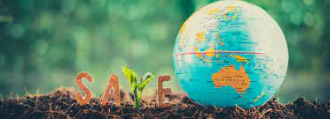
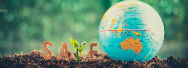

About Us
Save the Planet is a non-profit organization dedicated to raising awareness about environmental issues and promoting sustainable practices. Our goal is to empower individuals and communities to take action and make positive changes for the environment.
Our planet faces the interconnected crises of rapid climate change and biodiversity loss. We have years, not decades, to address these existential threats. In published research from The Nature Conservancy and 12 peer organizations, science points us to a better path for building a more sustainable, more hopeful future for the Earth.
 

A future in which catastrophic climate change is kept at bay while we still power our developing world. A future in which we can feed 10 billion people worldwide and provide cleaner, more abundant drinking water while also protecting life-giving lands, lakes and rivers. A future in which nature's wild heart still beats strong through healthy wildlife and magnificent landscapes while our cities are strengthened by harmony with nature.